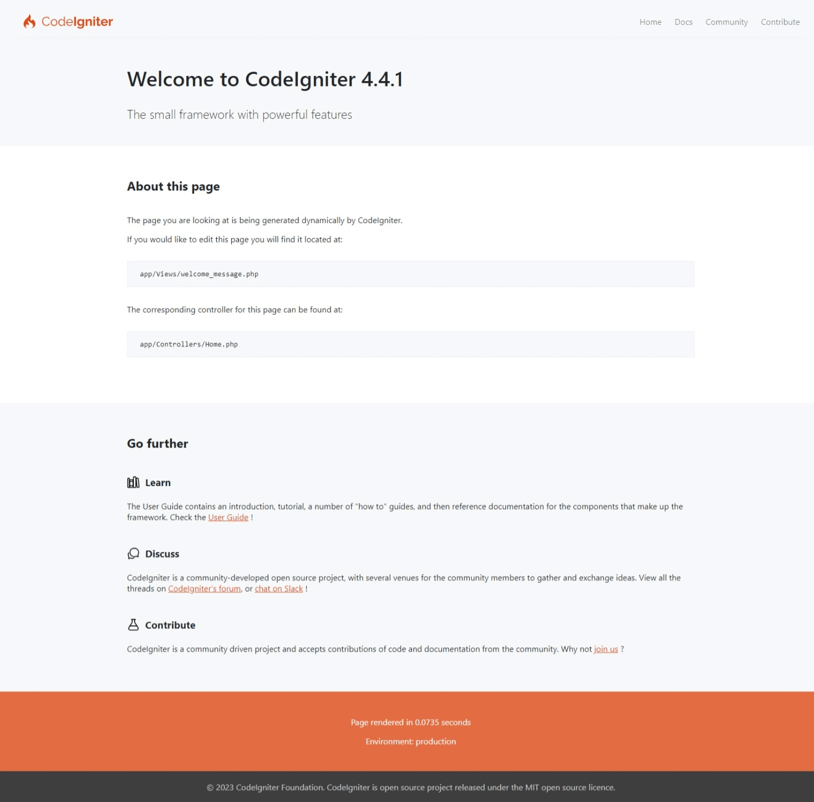
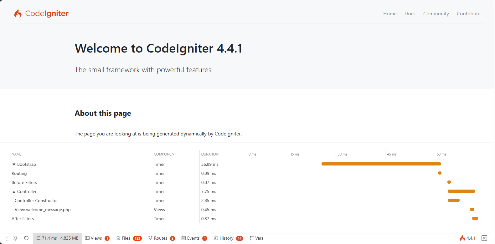
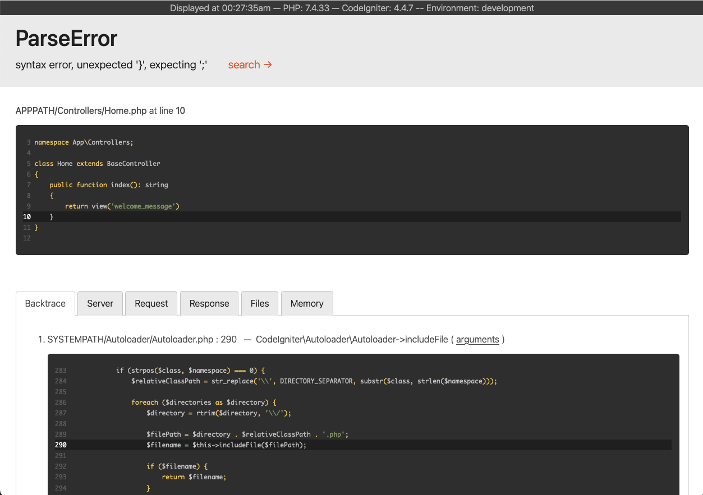

Membangun Aplikasi Pertama Anda
Gambaran Umum
Tutorial ini dimaksudkan untuk memperkenalkan Anda pada framework CodeIgniter4 dan prinsip-prinsip dasar arsitektur MVC. Ini akan menunjukkan kepada Anda bagaimana aplikasi CodeIgniter dasar dibangun secara langkah demi langkah.
Jika Anda belum familiar dengan PHP, kami merekomendasikan Anda untuk melihat Tutorial PHP W3Schools sebelum melanjutkan.
Dalam tutorial ini, Anda akan membuat aplikasi berita dasar. Anda akan memulai dengan menulis kode yang dapat memuat halaman statis. Selanjutnya, Anda akan membuat bagian berita yang membaca item berita dari database. Terakhir, Anda akan menambahkan formulir untuk membuat item berita di database.
Tutorial ini akan berfokus utama pada:
Dasar-dasar Model-View-Controller
Dasar-dasar Routing
Validasi formulir
Melakukan kueri database dasar menggunakan Model CodeIgniter
Seluruh tutorial dibagi menjadi beberapa halaman, masing-masing menjelaskan bagian kecil dari fungsionalitas framework CodeIgniter. Anda akan melalui halaman-halaman berikut:
Pendahuluan, halaman ini, yang memberi Anda gambaran umum tentang apa yang diharapkan dan membuat aplikasi default Anda terunduh dan berjalan.
Halaman statis, yang akan mengajarkan Anda dasar-dasar controller, view, dan routing.
Bagian berita, di mana Anda akan mulai menggunakan model dan akan melakukan beberapa operasi database dasar.
Membuat item berita, yang akan memperkenalkan operasi database yang lebih canggih dan validasi formulir.
Kesimpulan, yang akan memberi Anda beberapa petunjuk tentang bacaan lebih lanjut dan sumber daya lainnya.
Nikmati eksplorasi Anda terhadap framework CodeIgniter.
Memulai dan Menjalankan
Menginstal CodeIgniter
Anda dapat mengunduh rilis secara manual dari situs, tetapi untuk tutorial ini kita akan menggunakan cara yang direkomendasikan dan menginstal paket AppStarter melalui Composer. Dari baris perintah Anda, ketik yang berikut:
composer create-project codeigniter4/appstarter ci-news
Ini membuat folder baru, ci-news, yang berisi kode aplikasi Anda, dengan CodeIgniter terinstal di folder vendor.
Mengatur Mode Pengembangan
Secara default, CodeIgniter dimulai dalam mode produksi. Ini adalah fitur keamanan untuk menjaga situs Anda sedikit lebih aman jika pengaturan kacau saat sudah tayang. Jadi, pertama-tama mari kita perbaiki itu. Salin atau ganti nama file env menjadi .env. Buka file tersebut.
File ini berisi pengaturan khusus server. Ini berarti Anda tidak perlu
melakukan commit informasi sensitif apa pun ke sistem kontrol versi Anda. Ini mencakup
beberapa yang paling umum yang ingin Anda masukkan, meskipun semuanya sudah dikomentari.
Jadi, hapus komentar pada baris dengan CI_ENVIRONMENT di dalamnya, dan ubah production menjadi
development:
CI_ENVIRONMENT = development
Menjalankan Server Pengembangan
Setelah itu, saatnya untuk melihat aplikasi Anda di browser. Anda dapat menjalankannya melalui server pilihan Anda, Apache, nginx, dll, tetapi CodeIgniter dilengkapi dengan perintah sederhana yang memanfaatkan server bawaan PHP untuk membuat Anda siap dan berjalan cepat di mesin pengembangan Anda. Ketik yang berikut di baris perintah dari root proyek Anda:
php spark serve
Halaman Selamat Datang
Sekarang arahkan browser Anda ke URL yang benar, Anda akan disambut oleh layar selamat datang. Coba sekarang dengan menuju ke URL berikut:
http://localhost:8080
dan Anda akan disambut oleh halaman berikut:
Ini berarti aplikasi Anda berfungsi dan Anda dapat mulai membuat perubahan padanya.
Debugging
Debug Toolbar
Sekarang Anda berada dalam mode pengembangan, Anda akan melihat ikon api CodeIgniter di kanan bawah aplikasi Anda. Klik ikon tersebut dan Anda akan melihat debug toolbar.
Toolbar ini berisi sejumlah item bermanfaat yang dapat Anda rujuk selama pengembangan. Ini tidak akan pernah muncul di lingkungan produksi. Mengklik salah satu tab di bagian bawah akan menampilkan informasi tambahan. Mengklik X di kanan toolbar akan meminimalkannya menjadi kotak kecil dengan ikon api CodeIgniter di atasnya. Jika Anda mengklik itu, toolbar akan muncul kembali.
Halaman Kesalahan (Error)
Selain itu, CodeIgniter memiliki beberapa halaman kesalahan yang berguna ketika Anda mengalami pengecualian atau kesalahan lain dalam program Anda. Buka app/Controllers/Home.php dan ubah beberapa baris untuk menghasilkan kesalahan (menghapus titik koma atau kurung kurawal akan berhasil!). Anda akan disambut oleh layar yang terlihat seperti ini:
Ada beberapa hal yang perlu diperhatikan di sini:
Mengarahkan kursor ke header merah di bagian atas akan menampilkan tautan search yang akan membuka DuckDuckGo.com di tab baru dan mencari pengecualian tersebut.
Mengklik tautan arguments pada baris mana pun di Backtrace akan memperluas daftar argumen yang diteruskan ke panggilan fungsi tersebut.
Segala sesuatu yang lain seharusnya jelas ketika Anda melihatnya.
Sekarang kita tahu cara memulai dan cara melakukan debug sedikit, mari kita mulai membangun aplikasi berita kecil ini.